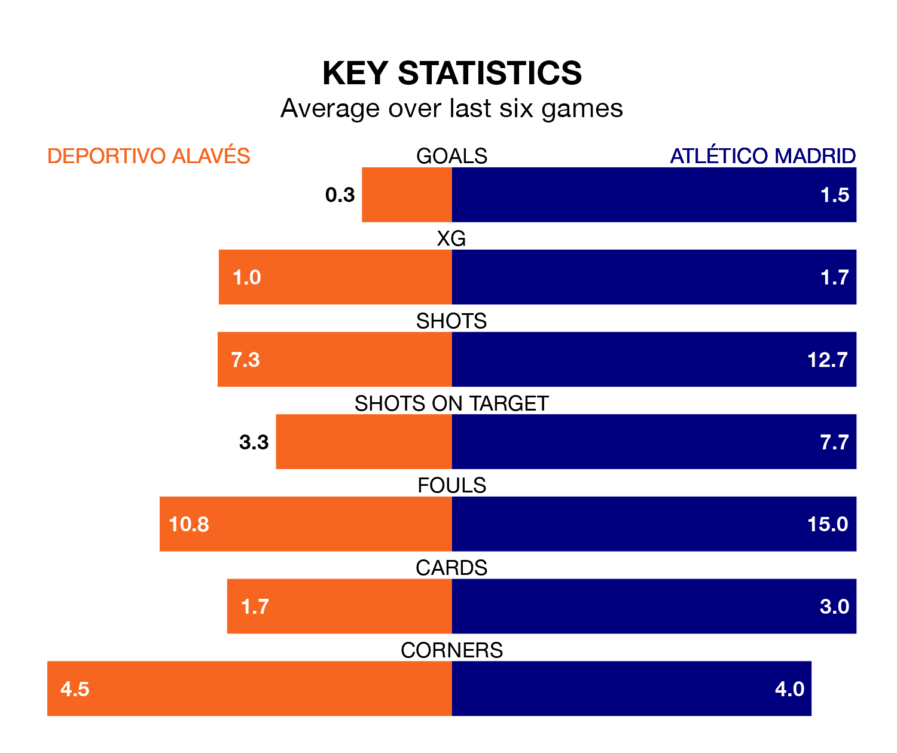

Deportivo Alavés welcome Atlético Madrid to Estadio de Mendizorroza on late Sunday looking to pick up points to end their three-game losing streak.
Alavés's struggles have left them with just four points from their last six La Liga matches, while their opponents have earned 10 from a possible 18.
With 59 goals in 31 games so far this season, Atlético are scoring more than average in the league with 1.9 goals per game. And they are conceding fewer than average, letting in 36 goals at a rate of 1.2 per game.
Alavés, meanwhile, are below average scorers, with 0.8 goals per game, compared to a league average of 1.3. They have conceded 1.2 goals per game.
In the last 10 years, Alavés and Atlético have played each other on 13 occasions. Alavés won one of them, Atlético nine, and they drew three times.
On average, Alavés scored 0.5 goals and Atlético 1.7 in those matches.
Their last meeting was on October 29, when Atlético won 2-1 at home.
The visitors are fourth in the table after 31 games, of which they have won 19 and drawn four, earning 61 points.
Depor are 10 places behind Atlético in 14th, with eight wins and eight draws putting them on 32 points.
In Alvaro Morata, Atlético have one of the league's most on-form strikers so far this season. He has notched 14 goals in 28 appearances, to sit fifth in the scoring charts.
His goal rate of one every 128 minutes is much quicker than that of Luis Rioja, the home side's top scorer with a goal every 598 minutes, and a total of four goals in 31 games.
Alavés's last match was on April 14, a 2-0 loss against Granada CF.
Atlético beat Girona 3-1 last time out, on April 13, with Antoine Griezmann (two) and Ángel Correa on the scoresheet.
Updated: 15:40 (UTC), 18/04/24